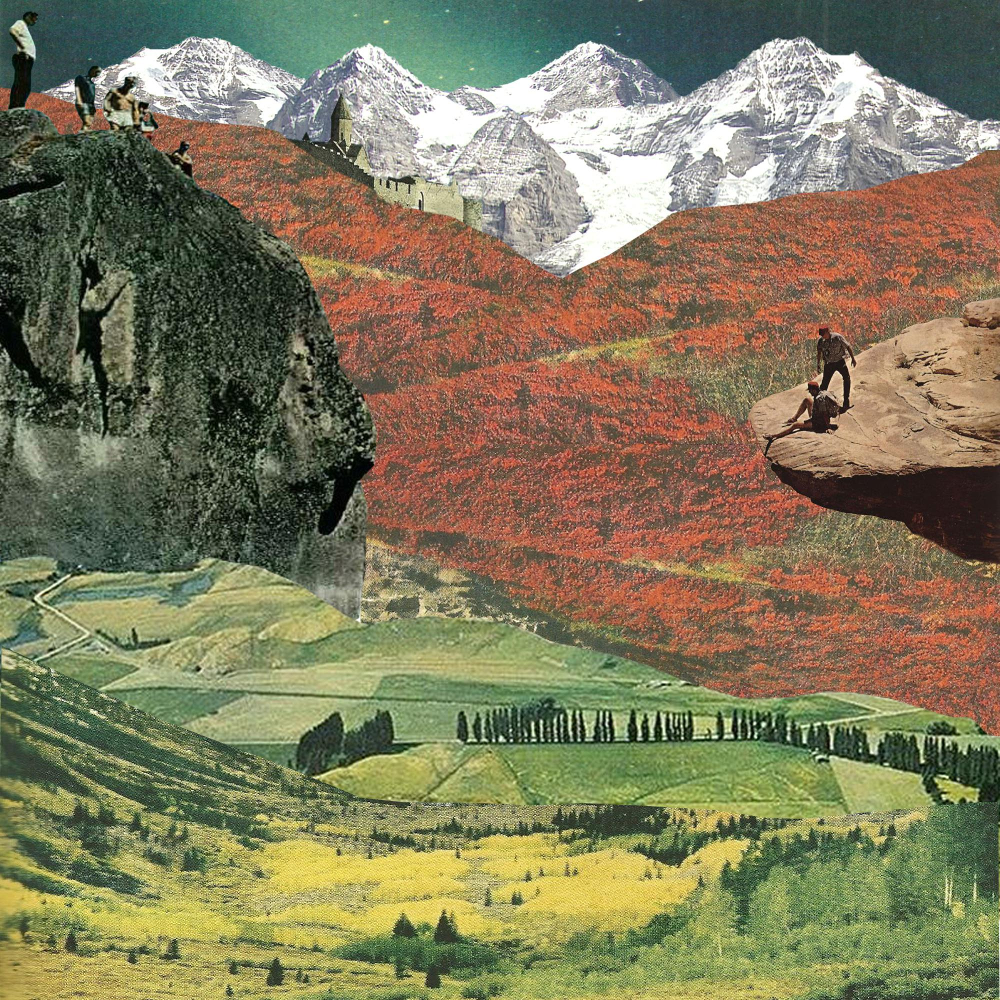

Thanks to the contributors!
Tim Carne
Thomas Conroy
Addie Mandeville
Dan Mitchell-Garnett
Federico Ruggiero
Andrew West
Jonny West
Richard West
Tim Carne
Thomas Conroy
Addie Mandeville
Dan Mitchell-Garnett
Federico Ruggiero
Andrew West
Jonny West
Richard West
With quarantine cancelling all climbing for the first half of the year and with time for the imagination to run wild, big plans started to boil and brew in the mind. A recent move to the continent had made bigger mountains a more accessible proposition, but whilst it is one thing to dream big, you need the skills to back up such the crazy ideas.
A slight relinquishing of the lockdown in Barcelona led to an opportunity to warm the fingers up on featured building walls and the free outdoor climbing wall called La Foxiada. The nights were long, and filled with traversing the walls, reminiscing of past climbs and discussing future goals. From Fedrico, my climbing partner, the availability of a car and Italian passport led to the idea to drive to the Dolomites, the home of big alpine rock routes.
Fedrico being European has that annoying continental European ability to hang around on small holds in steep terrain, whilst figuring out complex beta, a perfect counterpart to my classic English ability to stand around on moderate routes placing gear and working out where to go next. We both had a skillset to share with each the other, but what we didn't have was any real experience on the long multi pitch routes we would encounter high in the Italian Alps.
As May came around, we were allowed out of solitary confinement and into the rather beautiful prison yard of Catalunya. Climbers from the city flocked to Llieda and Tarragona, anxious to get back to hard sport, but with the fire of the Dolomites burning strong in us, we headed out in search of something a bit more esoteric, something that might prepare us for our alpine trip.
Multi Pitch One -: Arqueologia -Trans-mediterranea - - la Faclonera - - 360m
Lesson 1: Expect rock of the worst quality
Arqueologia Trans-mediterranea (which translates to Trans-Mediterranean Archeology), a perfect route name, it is memorable, short and sweet, and has an air of superiority. Something about archeology always brings to mind daring heroes or explorers uncovering ancient Egyptian pyramids for the first time. However, any route name that can be associated with excavating loose rocks to find ancient rusty artefacts should serve as a warning for to the avid climber.
It was a journey more than a climb, which involved traversing ledge systems for 250m across a hulking pile of limestone above the crashing sea before, before exiting 100m up the classic route via Chani. Apart from being loose and vegetated, the climbing was rarely hard, but route finding was problematic. The addition of loose blocks crumbling beneath us and the ability to throw holds you didn't like over your shoulder, to watch them crash down into sea below, provided what a UK guidebook would call "atmosphere".
"If I were an anchor, where would I be?" was a commonly muttered question and confirmation was always provided on finding the remnants of old pegs. An irreversible abseil after the fourth pitch 4 added commitment and the searing afternoon sun added a dose of suffering.
The unwanted grand finale came down to exhaustion and a lack of attention. As the last two pitches trended down towards the sea, we trended upwards past a pair of angry old sea birds protecting their young, towards a thread on a beautiful clean steep slab of rock. On arrival, to my horror, the thread was barely holding the weight of the flaking carabiner and with no slings on my harness and no other protection - I set about undoing my daisy chain, which was girth hitched to my harness, to use instead. The stiffest and boldest moves of the climb came next and led by the grace of God to a rusty two- bolt anchor.
Off route, and about one pitch off before the home straight and on the familiar ground of via Via Chani, I quested out a second and final time across a delicate traverse on rotten rock whose only casualties were two handholds and a foothold, which were destined to be washed up on the beaches to the west. Glistening titanium bolts leading up towards the sky signalled the end of our hardship and after three gorgeous pitches on bullet hard limestone - we sat atop the cliff, 10 hours after we started, well burnt, well beat and well silent.

The Grampians and Mount Arapiles are the centre of rock climbing in Victoria. Many consider these places to be the best in Australia and are a must for visiting international climbers. The Grampians is a massive bush and sandstone range, known for its bouldering, sport and adventurous trad climbing. Close by is Mount Arapiles, a striking quartzite formation rising out of the vast and flat Wimmera plains. It is known as the trad climbing mecca of Australia and home of the infamous 'Punks in the Gym' (32 / 5.14a / 8b+), a climb at one time believed to be the hardest in the world.
Earlier this month, two of the Grampians most iconic crags, Taipan and Bundaleer, were closed by the local state authority. The closures were over issues concerning the management of Australian Indigenous artefacts located in these areas. This did not come as a total surprise, as closures have been implemented for similar reasons at other notable crags in the Grampians since the end of 2018, while 'Special Protection Areas', which cover large portions of the park with other restrictions on climbing and potential fines, have also been established. Despite this, the closures of Taipan and Bundaleer have hit particularly hard given their significance to the climbing community and the feeling that, if even these places cannot remain open, then perhaps the worst is yet to come – the worst case scenario being the closure of significant portions of Mount Arapiles, which is by no means a far-fetched proposition. Earlier this year, an area at the mount, known as Declaration Crag, was closed due to the 'rediscovery' of nearby artwork. This artwork cannot be seen with the naked eye, requiring specialist archaeological equipment to detect.
I don't think that people outside of climbing or people who don't have similar passions of their own can comprehend the intense personal connection that climbers have to this sport and the places where it is done. I think of all the people over the last few decades who have lived in the Grampians and at Mount Arapiles to pursue their love of climbing. Climbers who elect to live in tents, cars or campervans, sometimes for years at a time, with little to no money, pursuing their thirst for progression and the testing of themselves, or simply just for the love of the culture of climbing and the landscapes in which it is done. To think of all those who change their lives to live out in these parts just to be near the rock that is the focus of such passion and personal connection, not to mention the community it provides for people who feel otherwise disenchanted by the standard options of modem living. All those who take long drives every weekend to be in these places, from Melbourne, Adelaide or even further, committed to the fatiguing life of the dedicated weekend warrior. These are people to whom these places are deeply significant, as evidenced by their continual presence. Many will say that what these places are being closed for is worth the loss to climbers. I don't think so. If you are a climber who agrees with these closures, I think that you should have more faith in the integrity of your own experience. Climbing embodies an important part of the human spirit, which should not be subdued by current political and media trends.
This article forms part of a series the next one will explore the indigenous perspective on this issue.
Have you ever stayed up at night wondering what life as a Wyoming rancher would be like? Well, you can rest up tonight with a copy of Gretel Ehlrich's 'The Solace of Open Spaces'. This gem will take you on a journey through space and time to a distant (and great?) America. Show me the person who doesn't enjoy a bit of escapism in these tumultuous times? The collection of carefully constructed prose are autobiographical and tell the story of a woman coming to terms with grief by moving to the wilderness. The world she inhabits is far removed from today's comfortable urban existence, as exemplified by the Basque shepherd who refuses medical treatment and instead packs sheep manure into his boot as a remedy for a cut. Yet, this was only 40 years ago in Wyoming. If adventure is embracing the unknown, this book is chronicle of that.
The book starts with an almost academic tone, Gretel as the outsider observing people in Wyoming. However, by the end, I felt she had become truly enmeshed and part of the community she is writing about. The boundaries between them and her become blurred. As Gretel writes about the cowboys she meets, "they don't know how to bring their tenderness into the house and lack the vocabulary to express the complexity of what they feel". As a community mental health nurse, I have worked with a lot of people who struggle to come to terms with their experience and for a number of reasons don't have the language to express it. We can all be overwhelmed by the experiences we have and for Gretel the slow pace of life in Wyoming was the antidote she needed to feel grounded and take control of her own story. Instead of life happening to her it felt like she had made some conscious decisions to live in her own way. I feel this and suspect it might be one of the major reasons I end up spending so much of my time outdoors, climbing and walking. I can feel in control of my life in a way that doesn't translate to my working or home life.
One of the thought I had following this book was how Gretel had been content moving to Wyoming and slowed down her pace of life. I found myself wondering whether if I had moved to Wyoming I would rather be focussed on finding training and recording my achievements in my UKC logbook. Rather than the experience and the hills effect on me. Always trying to catalogue and classify my experiences rather than simply having them. This book reminded me about the importance of being present in my outdoor pursuits and not always thinking about the next thing.
Akin to Zen Buddhism, Gretel observes the impermanence of the weather in Wyoming, observing an aliveness in the rhythms of the landscape and how this relates to our own psychology. "Everything in nature invites us to be what we are. We are often like rivers, careless and forceful, timid and dangerous, lucid and mudied, edying and gleaming, still." This meditative writing is reminiscent of Nan Shepherd's 'The Living Mountain', written over 50 years earlier and over 4000 miles away. The remoteness of Wyoming gave Gretel the time to observe the changing nature of her consciousness, notice the subtle contours of her thoughts. Her lyrical prose describes the contradictory nature of our own personalities sometimes analytic and at times emotional. The comparisons with zen come through in the total feeling I had when I finished the book, it was a calm and collected read. The sentences seemed to take their time in the same way I imagine how a zen priest would lay the table.
Finally, the line 'Disfigurement is synonymous with the whole idea of a frontier. As soon as we lay our hands on it, the freedom we thought it represented is quickly gone'. I am guilty of fantasising about what the life of a mountain hermit would be like. But would you really trade your freedom to choose from the banquet of modern life for the freedom of the hills? Maybe in fiction we can straddle both worlds.
Does the world need the gravel bicycle when it already has cyclocross, mountain and touring bicycles? What does bikepacking offer that traditional touring didn't already?
After taking a 16-year-old, steel-framed touring bicycle fitted with rim brakes and a traditional pannier setup through the Bartang Valley, Tajikistan in late autumn, I was convinced that the answer to these questions was no. Much of the hype around the hard-to-pin-down gravel bicycle felt like another instance of that deeply irritating cycling principle, n+1 - a recipe for insatiable want.
However, my cynicism took a bloody beating after I rolled up to the pier in Arnside, England for the Dales Divide 2020. Sure, I finished the 600km cross-country route with all 26,000m of climb on my 16-year-old touring bicycle. But for the week following, I could barely walk. My ankles resembled tennis balls and I struggled with tendon pain in both feet. Meanwhile, my contorted back muscles meant that lying down was no fun either. Ibuprofen and my brother's sofa got me through that week.
While the experience hasn't damped my enthusiasm for long-distance, off-road cycling, I'll be approaching future rides differently. I'll be riding a lighter rig to make it easier to push through boggy moorland, I'll distribute my gear more evenly around the frame rather than in two rear panniers to reduce the weight on the rear wheel, and I'll ride with disk brakes to minimise the corrosive effect of mud on braking force - carrying your bicycle downhill because you can't brake is … unpublishable.
Yet despite my apparent change of heart, the situation remains nuanced. A lot of the attention to gravel bicycles and bikepacking in YouTube videos, Facebook posts and industry magazine articles seems little more than hype. My second-hand, mid-range bicycle would have been fine for the Dales Divide if I'd taken a more relaxed approach. My problems were the result of the intensity of riding near constantly for 81.5 hours.
The suggestion of the n+1 principle is that to improve our performance we should upgrade our gear. What the Dales Divide 2020 taught me is that while this is true, it is only true for the very few moments in which we wish to perform at our peak ability. Otherwise, for most of us, most of the time, the premium price paid for an ultra-light, high spec gravel bicycle is expensively unnece6ssary – a bicycle equipped with an entry-level Shimano Tiagra groupset will prove more than adequate.
Instead, we would do far better to look at our mental preparation, physical condition and skillsets. Focus training on our relative weaknesses, eat healthier and sleep better, and we will perform better. Afterall, this is where the deeper satisfaction with one's performance comes from. Do these things, then invest wisely in n+1 with the knowledge gained along the journey to performance. n+1 is nonsense without experience.
I stand in the death of moments,
a mausoleum to the fantastical and inescapably finite.
I am the child of these lives and deaths.
I am carried ever higher on the wave of their bounded vitality.
I am grateful for their having been.
I paint the canvas of my life in the colours of their passings.
I look to the possibilities of moments to come,
seeing moments new bud from the fertile gift of moments past.
And so I learn to face the death of moments with equanimity and the reassurance that one day the next sentence won't start with I.
Multip-Pitch Two -: Aresta Ribas - - POLLEGÓ OEST, Montserrat - - 320m
Lesson 2: A long day out on a big bit of rock is hard to beat, no matter how easy
The serrated mountain, Montserrat, is the centre of the soul of Catalunya. An alien world of high conglomerate towers, for the most part utterly featureless until on closer inspection a vertical cobblestone road is revealed. If you follow the cobbles of various sizes and protrusions, from football-sized boulders to golf ball stones, you shall soon reach your destination. Little known about outside of Catalunya, this mountain, if you can call it that, is steeped in rich climbing history and ethics.
Pollego Oest is the most prominent swathe of rock on the usually broken south face. Rising up 300m vertically from the ground, it is broken up by huge ledges, which - although they take away from huge potential exposure, offer amazingly comfortable belays and a spot to contemplate the beauty of your surroundings. The climbing on this route is always pleasant, bold in places, but always pleasant and protected where it needs to be. It's just pure pleasure, climbing a big hunk of rock in the afternoon sun. What could be bad about eating sandwiches 200m off the ground watching peregrines dive down from the surrounding towers onto unsuspecting prey below whilst the cool breeze brings silence and the knowledge you have of your own private corner of the world. If our multipitch spirits were pummeled by the first route, this route was surely the revitalizing tonic.
Multip-Pitch Three -: Mutant World - - Pic de Martells - - 150m
Lesson 3: Good rope management not only saves you time but also saves reduces you Suffering
Our third escapade entailed driving up into the Garraf National Park, just above the scene of our first epic on the sea cliff of La Falconera, to a limestone escarpment called Pic de Martells. Driving up the mountain, you can see exactly where you are going, you can even see the buttress of which our the route follows. Unfortunately, the parking is at the top of the peak and you approach the crag from above, which makes it extraordinarily difficult to find a giant 200m high limestone cliff. With no discernible footpath, you essentially just keep walking down hill until you eventually walk over the precipice.
It took us a while to get to the route, but full of stoke we quested on up, leaving our bags at the bottom in the hope of abbing back down and exiting up another route. A 6b variant presented itself at the top of the second pitch and in our infinite wisdom we followed it under a giant overhang to an intermediate hanging belay on the lip. Swapping leads, I set off up the pitch, which felt significantly harder than 6b in the Spanish summer heat. Finding and I found myself unable to bypass the crux, and I was lowered back down and handed over to Fedi. This utter faff on the belay led to a tangle in the rope comparable to a complex celtic Celtic shield design. After no upward movement (or downward for that matter) for over half an hour, we finally sorted out our rat's nest and Fedi fought his way up the pitch.
Back on "easier" ground, I climbed the last two pitches on compact limestone, pleasantly run out between bolts and with plenty of opportunity to thread rock bridges for extra protection. The movements were wonderful, and at the top we felt that both the route and us we had both redeemed themselves ourselves from the atrocities of the 6b pitch. Now well behind schedule and not wanting to get ourselves in anymore '"situations", we abbed down to the bags and made a quick exit stage left.
Multi-Pitch Four -: GAM Diedre - - Montserrat North Walls - - 180m
Lesson 4: If you have put the time in, have confidence in your abilities.
This route is the Cenotaph Corner of Spain, a laser-cut 90-degree corner, sheer on both sides rising for 180m with a black splitter crack separating the left and right walls. After 100m, the plum vertical corner turns over hanging negative and arches over you for 25m until the lip. Intimidating is the word I would use. This would be the litmus test for our readiness for the Dolomites. Harder and more committing than any of the other routes, we had limited time left in the day and therefore a needed for to be efficiency.
The first pitch climbed beautifully, stemming and laybacking, placing plenty of gear in the perfect hand crack between sparse rusty pegs. The change over at the belay was smooth and timely, and Fedi linked the next two pitches together, more climbing up the corner before stepping out onto the left face for 10m to a ledge. I had drawn the straw for the overhanging corner, only time would tell if it were a long or short straw. Standing at the belay looking out from the wall, there is with 100m of air below the arching rock wall, and there was nothing for me to do but take a deep breath and commit.
Strenuous laybacks were the name of the game, stopping only when necessary to place gear. The pump was setting in fast and by the time I got to the crux in the upper section of the overhang I was fighting. A big jug allowed momentary respite before small but deep pockets on the right wall led to technical bridging, looking down between your legs you can no longer see the wall you just climbed, only the trees over 100m below you. Thoughts flick to the last cam you placed, you can feel the air below you and gravity seems to be sucking you down into the abyss. Digging deep, I made the last big moves to pull around the lip and a new looking piton rewarded me with safety and comfort. We swapped leads again, with no issues, no tangles, no worries, and Fedi finished off the last corner pitch to the summit where we sat in amazement at how beautiful the climb was and how smoothly it all of this went.
We had planned to do one more multipitch before we set off for the Dolomites, but an unforeseen car registration plates plate issue and an increase in COVID-19 cases meant that the next time we would be on real rock would be half-way on through our drive to the Dolomites, abseiling down into the Verdon Gorge. Though I suppose that is a story for another time.
Understand from the first this certainty. Butterflies don't write books, neither do lilies or violets. Which doesn't mean they don't know, in their own way, what they are. That they don't know they are alive - that they don't feel, that action upon which all consciousness sits, lightly or heavily. Humility is the prize of the leaf-world. Vain-glory is the bane of us, the humans.
It is with some pride that I write this, the final piece in this project. Conscious Contours has over time metamorphosed into a whole different beast since first conceived. Akin to the way in which I can remember vividly those climbing routes that were far more challenging than first imagined, this project has been immeasurably more work than I expected. However, it has also been far more satisfying for that fact.
It does strike me that outdoor pursuits may seem trivial when we are faced with the global pandemic that is Covid-19. However, the advice is simple: stay indoors with a good online outdoor zine at your fingertips. If, like me, you’ve already plumbed the depths of YouTube and Instagram, hopefully this will offer another space and maybe even a new perspective. In this respect, I am grateful that lockdown has happened, it has reignited my love of reading and writing – something I thought I had left behind with my A-levels. The lockdown has also brought about the tagline for this project, which is an excerpt from a Buddhist sutra: Interaction brings involvement, otherwise each keeps its own. I hope you enjoy perusing these articles and that they may inspire you in some way.
The plan for Conscious Contours will be four editions one for each season. This edition is based around winter. The next will of course be spring! If you have something to contribute, please contact me: contributors@consciouscontours.com
While winter climbing earlier this year, I found myself being overtaken by fear. Unlike in my previous sport climbs, there was no simple down climb this time. The Elvis legs threatened, my hand grip tightened, my indecision grew. Yet, the panic never took over. Drawing from some ethereal reserve, I was able to take control of and momentarily transcend my fear. While there’s little doubt my inexperience wildly inflated my perception of the risk, the effects of panic would still have been very real. Overcoming my fear felt like a decisive and transformational moment, which has led me to reflect on the value of embracing fear.
For much of my life, I’ve been shy and self-conscious, perhaps partially explaining the inhibition-suppressing appeal of alcohol. When asked for my preference in a group situation, you might hear me say, “Oh, I don’t mind, whatever you want.” Though sometimes cute, this delegation of the decision reflected my unwillingness to take responsibility – a form of passive decision-making. I avoided unfamiliar situations due to the inherent uncertainty or perceived risk, hesitating or delegating until a decision was made for me. However, the more I avoided challenging myself and confronting my fears, the more engrained the underlying belief that I couldn’t confront my fears became.
Yet, as fear began to capture me in that isolated Scottish gully, I found that my relationship to fear had subtly transformed. Reflecting on this pattern now, two experiences stand as milestones in this transformational process.
The first experience came during my cycle tour around South Korea. Leaving central Seoul in the late evening, I had cycled through the night following the Hangang, happy to continue cycling rather than camp. As I turned away from the Hangang to head east up a tributary river, the day’s first light washed over the hills, flooding me with a sense of euphoria. I wanted to embrace the sun, fist punch the sky, cry, laugh and sing. My body felt weightless, my movement effortless, as I floated along beside the river.
All my anxieties and self-doubts about touring alone in an unfamiliar country far from my habitual comforts receded with the retreating darkness. The river wasn’t a beautiful location, but that didn’t matter. I had no purpose other than to move forward one pedal after another. For the rest of that morning, I cycled with the sensation that every element in my universe was perfectly aligned. This moment was temporarily forgotten by the following week, as I struggled against monsoon rains, humidity and dehydration. Nevertheless, it had existed and even now I can reach into that memory to draw resolve in unfamiliar situations.
One significant realisation I took from that sensation was that, for most decisions, the particular outcome matters less than the act of committing to a decision. Perhaps it’s that the voluntary aspect of decision-making ensures responsibility and demonstrates agency. All the same, having chanced on this realisation, I found myself increasingly willing to embrace unfamiliar and uncomfortable situations in other areas of my life.
My second transformational experience came while cycling through the Pamirs in late October two years later. I’d partnered with Pritam, another cycle tourist a week earlier, and – as a severe snowstorm had already passed through the region – we’d chosen to take a shorter, but more remote route through Gorno-Badakhshan Autonomous Region in eastern Tajikistan. Leaving the M41 (the Pamir Highway) at Rushan, we cycled into the Bartang Valley aiming for Kök Jar, a 3,807m pass that would take us onto a plateau and across to Karakul close to the border with Kyrgyzstan. However, as we reached Savnob, the penultimate village before Kök Jar, a second snowstorm enveloped us.
Arriving in the dark, wet and cold, and in manic spirits, the situation felt desperate. Though only 130km from Karakul, we had no idea how many days it would take us to cross the plateau. Daylight was less than eight hours and temperatures after sundown were double-digits below zero. No one could offer first-hand information concerning the snow condition beyond the last village, although everyone speculatively told us that the pass was already closed by snow. We had no idea when another snowstorm would hit and, for a little added spice, I came across two wolves while heading to the toilet during the night. Pinned down in a single room for three days, with our host insisting that our only way over the plateau was for his friend to drive us in a 4x4 vehicle for $300, the situation felt intense.
The uncertainty of the situation permeated every aspect of my thinking. I had made substantial compromises during the previous four months of travel to cycle through the Pamirs. Yet, everything now felt so precarious. As the days idled by, the responsibility for the decision seemed to balloon. Eventually, as the skies cleared, we committed to crossing the plateau.
As I’ve reflected on these experiences, I see that they’ve nurtured my willingness to assume risk and endure hardship – something that I am privileged to rarely experience in daily life – transforming the narrative that I maintain about myself. In doing so, my sense of responsibility and psychological resilience has increased, and sensitivity to social anxieties and stress in daily life have reduced.
We each maintain a narrative about ourselves. This narrative is essential to our well-being. It is the well pool from which we give form to our existence. In its better moments, it offers coherence and direction. Though, in its less generous moments, it is excessively rigid and restricts what we believe we are capable of. We struggle to adapt to unfamiliar and uncomfortable situations.
If we don’t challenge ourselves, stretch the boundaries of our potential, our narratives can stagnate and solidify, becoming captured in self-reinforcing beliefs. For example, I found myself believing that I couldn’t speak a second language. Consequently, people responded poorly to my half-hearted attempts, reinforcing my belief and dissuading me from trying harder. In contrast, a propensity to embrace fear nurtures an ability to exist amid uncertainty and self-doubt without hiding behind comfortable patterns of behaviour – instilling an ability to live with and accept the fundamental essence of insecurity.
However, some cautionary reflections are necessary. First, there is the risk that the process of self-transformation can become an obsession or be commodified, in which case we lose our control over the process. Second, confronting fear needn’t involve danger. While overcoming greater uncertainty or risk appears to be associated with more radical transformation, I’m slowly learning to value the process of becoming over the state of being and have gained a greater appreciation for incremental over wholesale change. Finally, managing fear doesn’t mean defeating fear, it means embracing fear, which could involve retreating from a situation while retaining control.
After successfully crossing the plateau to reach Karakul, Pritam and I said our goodbyes, as he turned south to Mughab and I turned north toward Sary Tash, the first town in Kyrgyzstan. However, I had not accounted for the conditions on the north-facing descent. As I reached the pass at 4250m with the descent to Sary Tash at 3163m ahead, I found that the road was under solid, unbroken ice with knee deep snow on either side. For six hours, I attempted to ease my bicycle down the steep, exposed switchbacks, while repeatedly falling over. What I’d anticipated would take a day, now appeared to be a multiday hike-a-bike feat. With darkness having descended on my painfully slow downhill slide, mentally fatigued and contemplating two or three days with no food, headlights lit me up from above. As the marshrutka approached, the wheels struggling to find purchase on the ice, I decided to taxi it off the mountain. Naturally, the driver found space for my bicycle among the multitude of bags and the sheep that filled the back, and I settled in the last available seat. I was and remain disappointed that I finished by taking a taxi out of the Pamirs. However, I know that my disappointment doesn’t reflect a bad decision, but rather a lack of planning and mental weariness – knowing that sets me up better to succeed next time, the unfamiliar that little bit less unfamiliar.
I still have many fears and regularly shy away from uncomfortable social situations. Nevertheless, this journey has focused my approach on the fundamental question, do I trust and respect myself?
It’s interesting to think how a bad outcome for one party can lead to salvation for another, whether failing to succeed always mean failure.
It was early February 2009 and I was a fresher at Bangor University, full of delusions that three years in Snowdonia would turn me from a fluffy haired weekend warrior into a hardened mountain god. The winter season had started with a bang, offering amazing early season conditions across the whole country, especially in North Wales. I had met Tom Ripley the previous summer in the French Alps and it didn’t take much to persuade him to hitch down from the Lake District for a weekend of winter climbing. Another chance meeting on Beinn Eighe the previous winter had led to me climbing with Hamish Dunn; following a quick phone call, his axes were in the car and he was blasting up the M6 from Nottingham. After the awkward introductions, they seemed to get on. The three of us crammed into my single room, surrounded by a mountain of kit, and we set about deciding what to climb.
With snow down to the ground across Snowdonia, the choices were seemingly endless. After furiously flicking through an old copy of North Wales Winter Climbing, we made the decision to go big! Jubilee Climb, a five-pitch grade V on Clogwyn Du’r Ardurr, “Cloggy,” one of the biggest cliffs in the area high on Snowdon. After packing and re-packing, the three of us bedded down and tried to curtail our shared psyche for the next day’s adventure.
The alarm went off early. With minimal faff, the three of us were up, fed and in the car, leaving Bangor’s students to their snakebite-induced slumber, racing toward Llanberis in my mighty Suzuki Ignis. We parked near the Snowdon railway, shouldered our packs and – as dawn did its best to break through the morning clouds – started racing up the 90-minute walk to Cloggy. Shrouded by the arrogance of teenage youth, we assumed that no one else would have the nerve to climb on Cloggy in winter and were taken aback as we reached the halfway station to see a team ahead of us. This only sped us up. As we ran past them with youthful enthusiasm, we were relieved to hear they were heading to a different route. Nothing could stop us now.
We arrived at the base of the route soaked in sweat, and shared awkward smiles as we stared up at the seemingly blank and horribly steep corner. A game of rock-paper-scissors meant Tom got the first pitch. He set off, after one false start, on a bold and protection-less traverse across vertical reeds and grass to the foot of the corner.

As Hamish and I joined Tom at the belay, the corner seemed to rear up even more. Nevertheless, our confidence was high and another game of rock-paper-scissors meant it again fell to Tom to slay the beast. However, after emptying the tank, Tom admitted defeat having been quashed at the crux and returned to the belay. Following another rock-paper-scissors, Hamish geared up in silence for his bite at the cherry. What followed made tense viewing as Hamish picked his way upward, crampons smearing on the smooth walls, axes torqueing and hooking on whatever he could find.
“I feel physically sick!” he shouted down, panting as he reached the belay.
“We don’t care,” came our heartfelt reply.
This was it; we’d slain the beast, victory was ours! Although, with all our focus on the route, we’d failed to notice a change in the weather. The wind had picked up bringing with it every winter climber’s mortal enemy, spindrift, and lots of it. Things also felt notably warmer than they should have considering Cloggy’s elevation. After Tom followed up without fuss, it was my turn. As I dismantled the belay, I looked up to find the corner had become a raging torrent of spindrift. The following 45 minutes were an exercise in persistence and holding my breath. As I leant into the corner to look for axe placements, I moved into the spindrift’s line of fire and quickly became buried. Every time I looked up to work out the next few moves, snow would race into any exposed opening in my clothing, creating a layer of snow between my skin and jacket. Thankfully, I was on the safe end of the rope, and this whole process proved to be the highlight of the day for Tom and Hamish, as they laughed at me from above, nicely sheltered from maelstrom. I got to the belay ledge a swearing ball of more snow than man and we decided to do a quick time check before setting about the final few pitches to glory.
“Shit!”
It was 4pm. How had this happened? It had taken us the whole day to climb two pitches! We looked down to the base of the cliff to see the team we had passed on the walk in strolling back to the safety of the valley and the warmth of the pub.
“But we are so much younger and fitter than them!”
We had about 30 minutes left of daylight, and with the worsening weather we decided to admit defeat and leave the route for another day. We quickly sorted our kit and in one long abseil were all safely back on the ground. Amazed that what had taken us several hours of struggle was reversed in a little over 10 minutes. We had been well and truly put in our place, and set off on the long walk back to the car, tails between our legs, but happy to be in one piece.
“Help!”
“What?”
“I didn’t say anything mate.”
“Help!”
“Hamish, did you hear that?”
“Hear what mate?”
“Help!”
“Tom, stop a minute.”
“Why?”
“Help!”
“I definitely heard it that time. Someone’s calling for help. Can you see anyone?”
“Help!”
“There, look!”
In the fading light, Hamish pointed to what looked like a person some 150m above us on a broken section of cliff. I set off sprinting uphill, with Tom and Hamish shouting directions from beneath.
“Left, keep going up towards that small icefall.”
“Help!”
“Keep going, about 20 metres above you.”
“Help!”
I looked up as the shouts grew louder, heart racing, sweat running down from under my helmet, to find a man, slumped in the snow, jacket torn, shivering.
“Are you ok? What’s happened?”
“I was walking. I think, I’ve fallen. My chest hurts. Have you seen my friends?”
As Hamish and Tom arrived, I began checking the guy over. I’d recently done a mountain first aid course, but the man needed more help than we could offer so Tom called mountain rescue. We gave him our spare layers and hot juice, and did our best to warm him up while we waited for the helicopter. As I attempted to keep the man awake and Tom remained on the phone to mountain rescue, Tom’s headlamp illuminated another body about 20m above us, face down in the snow. Hamish and Tom went to help, but our help was useless – the man hadn’t survived the fall.
The next few hours passed like seconds as we waited for the mountain rescue team scrambled from Llanberis to join us. Before we knew it, a helicopter had arrived and taken the two casualties to Bangor hospital. As the helicopter took off with the second casualty, the three of us were left sat in the darkness wondering what had just happened, how had a day climbing turned into a mountain rescue? We were then told that the helicopter would return to take us off the hill. I initially refused, but didn’t have much say in the matter and we were soon being winched into a Sea King and flown down to the valley, Cloggy flashing before our eyes.
It was a surreal moment as we climbed out of the helicopter, harnesses and crampons still on, and were taken into the Nant Peris mountain rescue base. Statements were given, we were fed and watered, and then allowed to drive back to my halls of residence. I couldn’t tell you what time we got back, only that we sat and chatted, before quickly succumbing to sleep.
“Well, that was a big day.”
“What shall we do tomorrow?”
“Sleep.”
It feels strange writing this over 10 years down the line. The first man we found did survive, and we later heard his story as we were all interviewed by Reader’s Digest, who published an article on the events of that day. Though many questions persisted. If we were better climbers, would we have finished the route and failed to hear the cries for help? Was our perceived failure necessary for the man to survive? While those questions don’t need answers, they remained circling in our heads for a long time afterward.
Climbing, by its nature, is often a goal-orientated pursuit and – especially when you’re new to climbing – not reaching the top feels like failure. As time progresses and experiences accumulate, you learn from these failures and apply what you have learnt to become a better climber. The succeed-at-all-costs approach to climbing can result in a short climbing career, as the lines between risk and reward become dangerously blurred. If the opposite of failure is success, then surely the only success is to be around to climb another day.
I look down over my left shoulder. The gully gushes down from me, past Gareth who is perched on a shelf offering a waist belay, rushes around a choke stone, and spills out onto a boulder field seven pitches below me with the loch shore further below that. Rich and I have simultaneously climbed on lead to just below the cornice. Rich is close below and right of me. The cloud cover is touched pink and orange, as the sun disappears over the horizon hidden behind the cornice. It has been about 10 hours since we started the walk in from the car. Now it is decision time for me.
Someone seems to have ascended right to top out in a past time, but Rich reminds me of the guidebook’s advice against navigating right over the precarious avalanche-prone cornice. Yet, from my tensed position, traversing left appears far more exposed. My mind has warped the modest positive gradient of the gully into a vertical slab of ice. I make a tentative attempt to start the traverse left, but – under the leering cornice and with one ice axe – immediately back out. My heart rate picks up. I look through my legs, and catch a blurred impression of Gareth. I imagine the impatience with which Gareth and Rich sense my hesitation. A terror courses through my being. I’m suddenly very aware of the lack of protection between me and Rich, and between Rich and Gareth. The sensation of a thought shoots through me: one wrong move, a misplaced ice pick, a poorly weighted crampon spike, and the consequences...
As the person on the lead end of the rope, I cannot delegate the decision to anyone else. Though in truth there is no decision to make, there is no backing down. I must commit to the traverse and forget the appeal of the right top out. I attempt to concentrate on my breathing. My focus narrows. I commit cautiously but with intention, trying to anticipate Rich’s movements. In the repetition of moving one limb at a time, my concentration is alternately distilled to a pin prick on the end of the crampon or axe before exploding free. In this cyclical pattern of contraction and expansion, I traverse a knife-edge between debilitating terror and transcendence.
Above Lochnagar, translated as Loch of the Goat or Little Loch of the Noisy Sound, rises Cac Carn Beag, humorously translated as Little Pile of Shit. Though part of the Royal Estate of Balmoral, Queen Victoria was apparently unimpressed, having reportedly stated “But alas! Nothing whatever to be seen; and it was cold, and wet, and cheerless.”
Though its reputation as a heap of shit was apparently corroborated by an empress, Lochnagar was no little pile to us. In the way that novices do, we made a mountain out of a pile of goats’ shit. Despite writing this while safely sat at my desk, with the spring sunshine bursting through the window and music playing in the background, the experience continues to hold a strong power over me. The climb ranks among the most acute experiences of my life.
Brilliantly ill-prepared, we had set our fantasies on scaling a gully in Scotland’s southern Cairngorms. Equipped with five days’ worth of winter skills training in marginal winter conditions, some questionable navigational skills, a modest ability to comprehend mountain weather and avalanche reports, some brand new or recently borrowed equipment (including one axe each, some nuts and slings), and a lot of love for one another mixed with sibling pride, we trooped off to scale an empress’s pile of goats’ shit.
Despite our best efforts at self-sabotage, the weather had decided to side with us for the day – a pleasure seemingly unbefitting of an empress. Visibility during the three-hour walk in was near perfect. Perhaps we should have turned back the moment Lochnagar came into view after rounding the small woodland in which we parked. It was immediately clear that this loch imposed its presence on the surrounding landscape. But not us, our fantasies had long since run away with our hearts. As Lochnagar continued to bounce in and out of view as we trooped in our mountain boots along a winding 4x4 track, we were enticed ever deeper into wonderland.
We were far from the near whiteout conditions of the previous two days in Cairngorm’s northern corries. The previous day, we had decided to turn back from an attempt to skirt Cairn Gorm in the hope of reaching an east-facing crag, which we anticipated would shield us from the westerly wind. It may have done, but the strong gusts dissuaded us from even attempting to cross the exposed high ground. On that occasion, caution had prevailed. Perhaps, given our disappointment at turning back, we were more committed and persistent this day.
We reached the base of Raeburn’s Gully as in a dream. The landscape dropping to a placid loch beneath us and out onto the majesty of Cairngorm’s central plateaux. A muse for the most romantic of 19th century poets. As we began to rope up, with harness and crampons already fitted, secured on a marginal anchor, an epic of miscommunication, ill-informed decision-making and haste awaited us.
I was back in the van in the Australian Grampians when the restrictions on movement and closures of public places were in full swing. In the week leading up to the day I left Melbourne, I was becoming increasingly anxious about getting stuck in the city. I kept putting it off though, as I wanted to finish a few things while I still had the comfort of a room at a friend’s house. I kept an eye on the news, and got everything packed and ready to go just in case. I wanted to be able to make a dash for it if it looked like restrictions would come in suddenly. The thought of being stuck in Melbourne while all this was going on seemed like a nightmare to me. The means by which I could survive in that city – spending hours each day at public libraries and bouldering gyms, followed by long sessions in the spas and saunas of public swimming pools – these places had all been closed for business indefinitely. I imagined myself getting stuck in Melbourne with the longing I would feel for climbing and being in the van on my own in the bush. I imagined how miserable I would be stuck in the little room at my friend’s house, hearing the traffic on the street, stuck like I would be on YouTube and Netflix, getting up late and being unproductive.
These scenes didn’t come about, but when I did get to the Grampians I felt somewhat different about what I wanted to be doing. Though I was still glad not to be in Melbourne, I found after a few days of being in the van again, I was fed up with the lifestyle and my enthusiasm for climbing was low. I was just coming off the back end of a full year of dirtbagging and had been feeling a growing need to occupy myself with something other than climbing. This was enhanced by the uncertainty of the times and it gradually became clear – as the public places, shops and businesses started to close or change their services to adhere to the social distancing rules – that it was a bad time to be on the road. More than this, I had the growing sense of a social pressure to stay put, making me feel like I shouldn’t be doing what I was doing. I felt this from listening to ABC News, and from talking with friends who seem to embrace the “self-iso” meme well before I was even aware it existed. This feeling of doing something that you shouldn’t be is always with you to some extent living in a van, but in the current climate this feeling was tenfold. Driving up the Western Highway, I was worried every time I saw patrol cars, thinking they’d see the curtains in the windows of the van and know what I was about. I had to keep reminding myself that the van really was my home and so I had at least a semi-valid excuse to be on the move. Sure, if I really needed to, I could go back to Melbourne and stay with friends or my sister, but for over a year now the van had been the only place that was legitimately mine.
I had arranged to meet a climbing buddy at a bush camp near Golton Gorge inside the Grampians National Park toward the end of March. The official campgrounds had already been closed, but we thought we’d be alright camping in the bush, as that was allowed under normal circumstances in the Grampians. I climbed a bit, but mostly belayed. In the evenings, I would study an online course I’d just begun and began to search for rentals in the surrounding local towns. There was a couple at the camp whom my buddy knew and who had just started a year of dirtbagging. I felt sorry for them having planned all this for months, doing up their van, saving up and quitting their jobs. Then, right when they had organised to hit the road, the mania began, all the campgrounds closed, and travel between states became unadvisable and eventually, except for the New South Wales-Victoria border, closed. A Slovenian couple who were friends of mine, who had been in Tassie for the last couple of months, also came up to the bush camp, so we had a bit of a crew. We all set up in different corners of the clearing and only went climbing in pairs. This went on for a couple of weeks before I got offered a flat to rent in Horsham. It turned out to be just in time, as the next day a ranger rolled through the camp and told us the entire park was closing the following day.
Now with a six-month lease, I consider how I will spend my days over this period. It’s approaching mid-May and the radio tells me restrictions are easing in Australia and around the world, and a national plan for a return to normalcy has commenced. I’m doubtful and, though I do tend to lean toward bleak thinking, it feels to me like (and it already feels trite to say but…) we’re in a new world now. I’d vaguely planned to travel next year, to continue the dirtbagging overseas, stopping in on some of the major climbing destinations. At the moment, that seems somewhat unlikely, I imagine it’ll take some time for international travel to return to being as easy as it was. It makes me think that perhaps there are many things that we took for granted that won’t be so easy anymore. I think my dirtbagging last year might come to be some fantasy belonging to an idyllic past. Maybe not, but at least it gives me pause to consider that such experiences are perhaps worth more than memories fading like old curtains behind my eyes. I've got guaranteed welfare payments until the end of November that will easily cover my rent and living. My desire to climb is low, so it seems like a good time to move forward, in a different direction, toward something more creative. The year past – all those months in Tassie and the Bluies, and the Gramps and Arapiles toward the end – has already got that generous fog of nostalgia over it. If I force myself, I can recall that even with the freedom of that time, I felt stress and strain in myself and the people I was with. I think it would be good to write it down, particularly if that bleak part of mind is true and such experiences do become a thing of the past. Who knows, but maybe I and others I met (and didn’t meet) who were living the same sort of life could end up being, at least for a time, the last of the dirtbags.
skies light with arrival
or what you once called
without any explanation
“the orange hum of birds”
I. Tuesday
We stopped and looked at animals for a long time – black sheep to be specific. Then when you mentioned the birds waking me up being a nice way to be woken at 5am I realised it is springtime, that I know this orchestra as the sound of home.
*
i’m fond of your phraseology
how you love the bir-hum
though you cannot
name the orange calls
II. Saturday and/or Monday
I felt sad actually we all felt sad that day, everyone, I imagined, absolutely everywhere. We hung out with our sadness in our separate rooms, houses, flats, gardens, yards, countries. Then after maybe days an evening that is fuller than any previous rehearsal.
*
nor any wings
muffled reason
for unpaired arrival
III. Saturday and/or Tuesday
There is an episode of a TV show where the sky is exactly how I’m trying to describe it. What’s that? Oh this friend has written cryptic clues to species of insects and is fashioning a board game. What’s that? Oh someone else on Instagram pinching a lump of gritstone tied to an encyclopaedia.
*
I heard they heard
about the raved
nights we had
that they picked up
our shiny exasperated
signal calling out
IV. Every Wednesday
does weekly shop, soaps veg, drinks tea, sputters through pull-ups, dances alone to her favourite song, remembers the sound of figurine splints of granite ricocheting down a gulley in France, wonders if fear has brief, sharp forms and soft, languorous forms, moisturises hands, writes trashy poem about feeling domestic, reads poem to a flock of seagulls, throws poem into river, sanitises hands of day
Make it interesting. Make it yours. That’s the point.
At their best, books articulate thoughts that have been swirling around in my head, but which I’ve so far been unable to communicate – and Ed Douglas’s book, The Magician’s Glass, does just that.
I commit so much of my life to climbing (time to training, weekends away and earning the money to buy gear and fuel the car) that I often find myself asking the question, what’s the point of climbing? And this line from The Magician’s Glass is as good an answer as I’ve found: Make it yours – whether that’s an obscure sandstone problem in a remote Northumbrian location or a visionary Himalayan quest. This line captures what is for me the essence of climbing, which is movement – how we interpret and find interest in different forms of movement, whether that’s power, flexibility or endurance moves, which speak to our own unique ways of being in the world. That is also why we end up grade chasing, as we explore the limitations of movement, expanding the perceived boundaries of the possible, a once-impossible Font 5 can no longer command the same interest as a 6C.
Douglas’s book caught me at a particularly receptive moment during the UK lockdown. Stuck in a northern English city without access to gyms or natural rock, I’ve found myself reflecting on a sport and its accompanying culture that have become such a central part of my life – and The Magician’s Glass has been an informed friend with whom to contemplate this topic. Douglas’s prose are easily digestible, and yet the rhythms and tones (varying to suit the subject of each essay) add texture and retain my interest. Similarly, the essays are short enough to be read in one sitting and yet remain thought provoking, exploring pertinent questions about an ever-evolving sport. This balance between ease and substance appeals to my information-addled post Covid brain. My anxieties are forgotten as I contemplate lives devoted to the mountains.
In the eight reflective essays that comprise the book, Douglas explores a range of topics many of which I feel as a climber I should have considered in depth, but in all honesty never have. For example, while trekking in Nepal, I failed to pay much heed to the underlying Western assumptions that I took with me to Nepal, such as the overly simplified characterisation of Sherpas, the ghosting of the many other ethnic groups that comprise Nepalese society or the affects that my actions were having on power relations between different ethnic groups in Nepal. Further, the ethical dilemma in which Ueli Steck put the judges of the Piolet d’Or by not recording his ascent of Annapurna I goes to the core of alpinism. I can’t imagine everyone being fine with Eddy Merckx just saying he had won all eleven of his Grand Tour titles without anyone validating his wins somehow. Yet, meticulously recording one’s ascents runs counter to the desire for freedom that many people have described as having motivated their expeditions into the beyond. Gripped and short of breath, just don’t forget to hit ping on your altimeter. In addition to the philosophical appeal of these two essays, Douglas’s essay on Kurt Albert has a deeply emotional appeal. A pioneering figure in climbing culture as the father of the redpoint, Douglas conveys Kurt Albert’s enthusiasm for climbing and lifelong learning with such adroitly that it has re-energised the attitude that I bring to my own climbing. What more could a book achieve?
The Magician’s Glass is a read full of wonder, which took me on an emotional journey that climbing books rarely do. Shakespeare wrote that art should “hold a mirror up to nature” and Ed Douglas certainly achieves this. However, Shakespeare only has a rating of 2.6 on Goodreads, so I’ll leave that opinion to you.